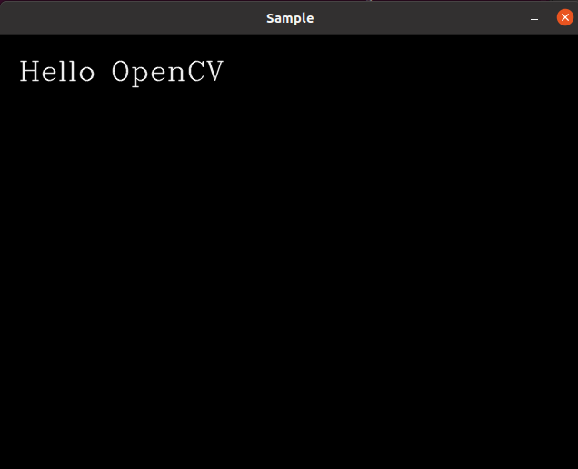

Ubuntu 上安装 OpenCV
本文档的安装环境是在Ubuntu20.04上执行的，多次安装，均能正常使用。
官方的安装文档
1、安装相关软件包
1 | $ sudo apt install build-essential |
执行第三条命令时，可能出现 无法定位软件包libjasper-dev 的错误提示 的问题，执行以下命令可以解决。
1 | $ sudo add-apt-repository "deb http://security.ubuntu.com/ubuntu xenial-security main" |
2、获取Source
Linux 选择 Source 下载后解压，得到一个 opencv-x.x.x 的文件夹，即是 source。
放置何处都行。
有时候从官网上下载 source 会比较慢，可以克隆我的仓库
1 | $ git@gitee.com:chenjmg/opencv-source.git |
3、利用cmake构建opencv
进入到解压的文件夹里，创建并进入新的文件夹 build.
1 | $ mkdir build && cd build |
在build文件下执行命令
1 | $ cmake -D CMAKE_BUILD_TYPE=Release -D CMAKE_INSTALL_PREFIX=/usr/local .. |
如果报错，那么去掉 -D后面的空格再尝试一下。/usr/local 是 OpenCV 的安装路径。
开始编译，命令如下，其中，-j4 表示启用四个线程编译，这取决于你的硬件环境。
1 | $ sudo make -j4 |
编译结束后，执行安装：
1 | $ sudo make install |
完成后，OpenCV 就安装好了，接下来要配置 OpenCV 的编译环境。
4、配置环境
安装完成后，手动创建opencv.pc：
1 | $ cd /usr/local/lib |
在文件中添加
1 | prefix=/usr/local |
其中，Version要根据source的版本号修改。
更改环境变量，输入命令：
1 | $ sudo vim /etc/bash.bashrc |
打开之后，在文件最后面添加以下内容：
1 | export PKG_CONFIG_PATH=/usr/local/lib/pkgconfig:$PKG_CONFIG_PATH |
保存退出，opencv基本上就安装完成了。通过 pkg-config 查看 opencv 版本:
1 | pkg-config --modversion opencv |
5、测试
进入到source文件的目录，切换到example文件夹下：
1 | $ cd sample/cpp/example_cmake |
创建并进入新的文件夹build下，
1 | $ cd build && cd build |
编译
1 | $ cmake .. |
编译完成后，在build下会生成一个可执行文件 example_cmake
执行
1 | $ ./opencv_example |
如果安装成功，将看到窗口显示。

- Post title：Ubuntu 上安装 OpenCV
- Post author：Jimmy
- Create time：2021-10-03 00:15:56
- Post link：https://www.gogojimmy.top/2021/10/03/Ubuntu 上安装 OpenCV/
- Copyright Notice：All articles in this blog are licensed under BY-NC-SA unless stating additionally.